Spencer grew up in Midland, Michigan — but from ages 7 to 13 he was living in Hong Kong, going to school abroad. The game was the constant through all of it. By the time he got back to Michigan, the work ethic and love for basketball were already locked in.
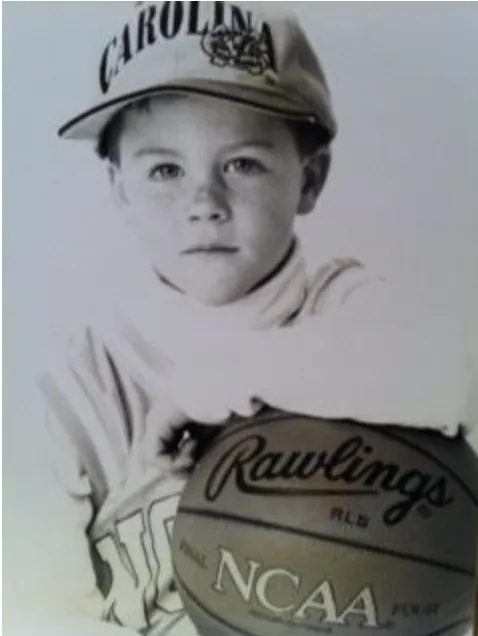
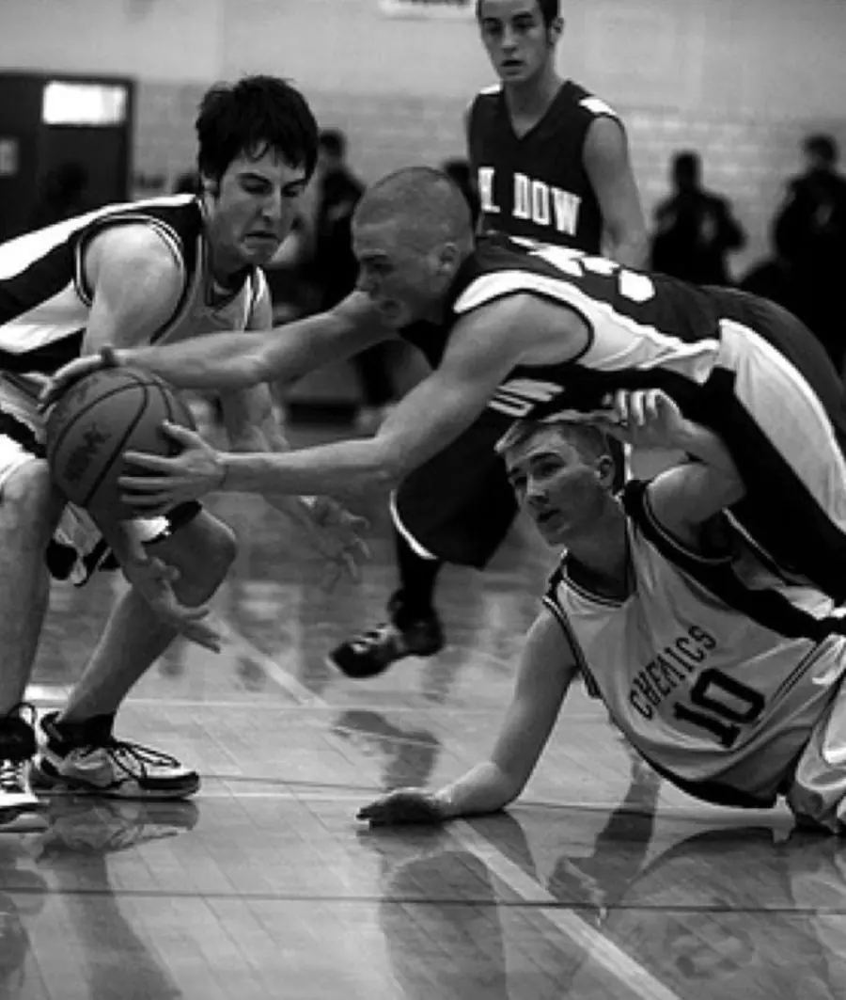
Back in Michigan at H.H. Dow High School, Spencer established himself as one of the state's elite players. A physical, relentless competitor, he earned 2x First Team All-Saginaw Valley Conference honors and All-State recognition as a senior. The film shows it all — total commitment, nose for the ball, and a motor that never quit.
Spencer earned a Division I scholarship to Wake Forest University, competing in one of the most prestigious programs in the ACC. Wearing #42 for the Demon Deacons, he developed his game against the best collegiate competition in the country. He went beyond basketball — earning his Master's Degree in 2014, proof that the same discipline he brought to the court extended into every area of his life.
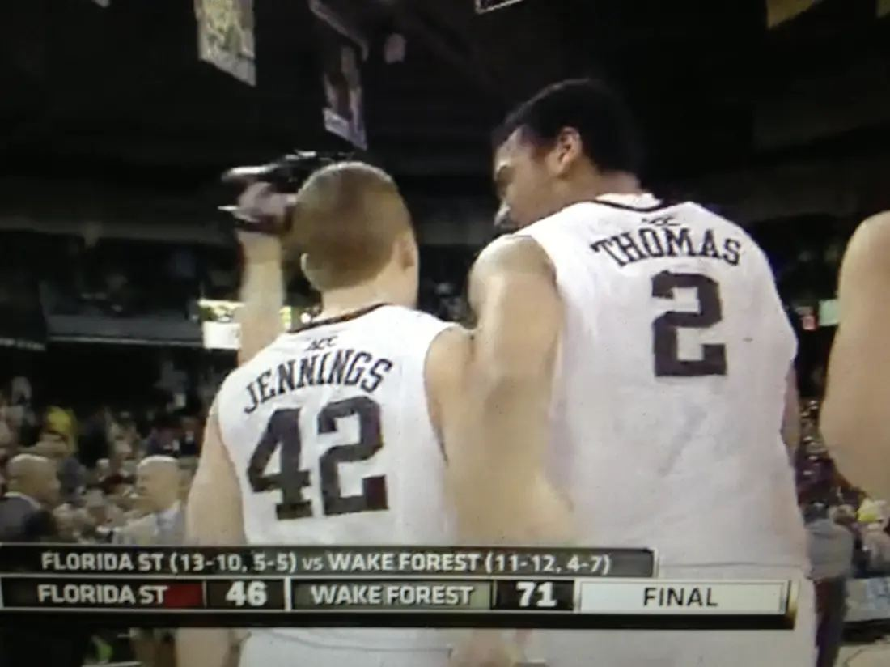
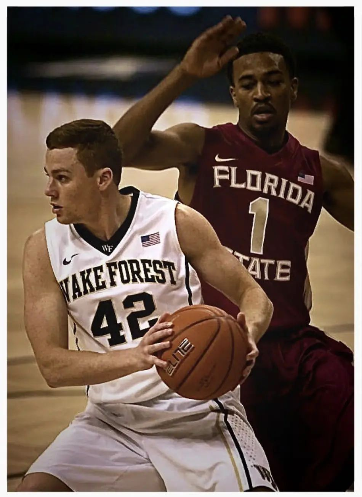
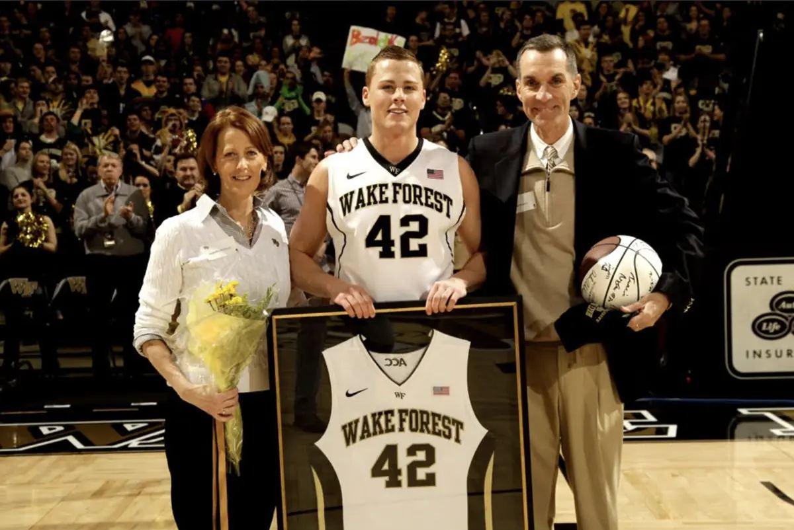
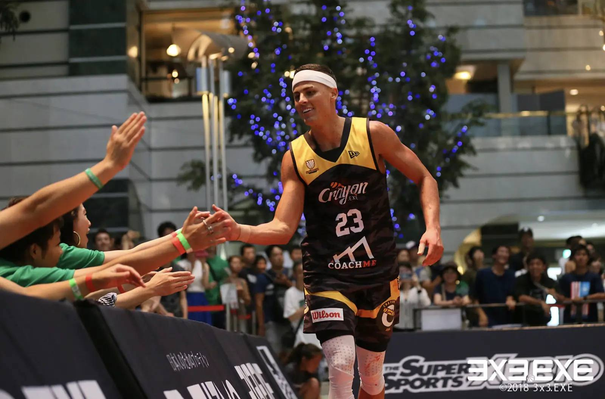
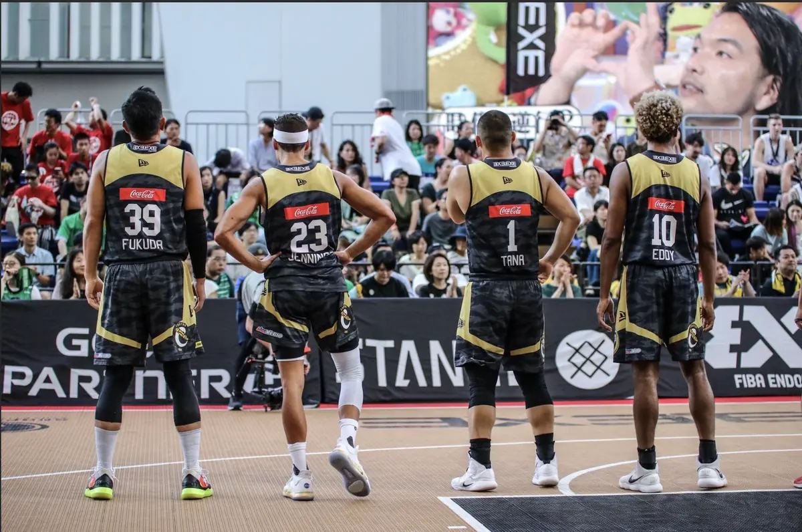
Nine seasons competing in Japan's 3x3.EXE league — from his rookie year with Okinawa.72 EXE all the way through a championship run with Crayon.EXE. Top 5 PPG multiple seasons, 5 Japan Tour Extreme Round titles. Consistent producer from year one.
His career took him beyond Japan to the FIBA 3x3 World Tour in Qatar, China, and Korea — and in 2023 he trained with the USA 3x3 Olympic Team.
The 3x3 World Tour is the highest level in the game — the best players from every country, competing in packed arenas worldwide. Spencer competed at the World Tour Masters in Doha, Qatar after winning the 3x3.EXE championship in 2020. He held his own on that stage.
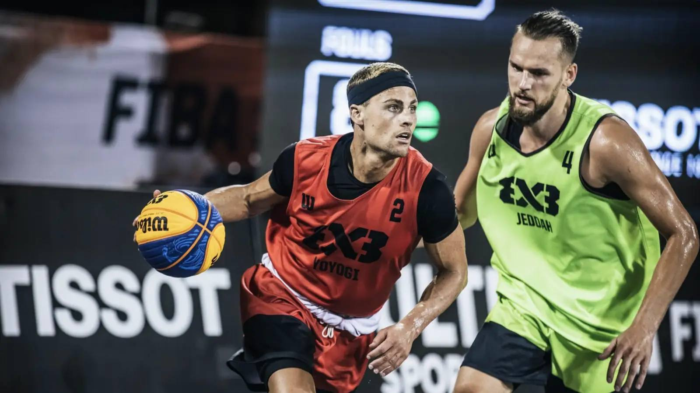
Led all rookies in scoring during his debut 2017 season with Okinawa.72 EXE. A statement arrival.
Ranked among the top scorers in the entire 3x3.EXE league with Crayon.EXE. Elite company.
Led Crayon.EXE to the 3x3.EXE Premier championship — earning a ticket to the FIBA World Tour Masters in Doha, Qatar.
Five times the best in Japan's most competitive single-round format. Consistency at the highest level.
Currently ranked among the top 5 all-time active scorers in the 3x3.EXE league — a testament to longevity and excellence.
Invited to train alongside the United States 3x3 Olympic program — the highest level of recognition for any player.
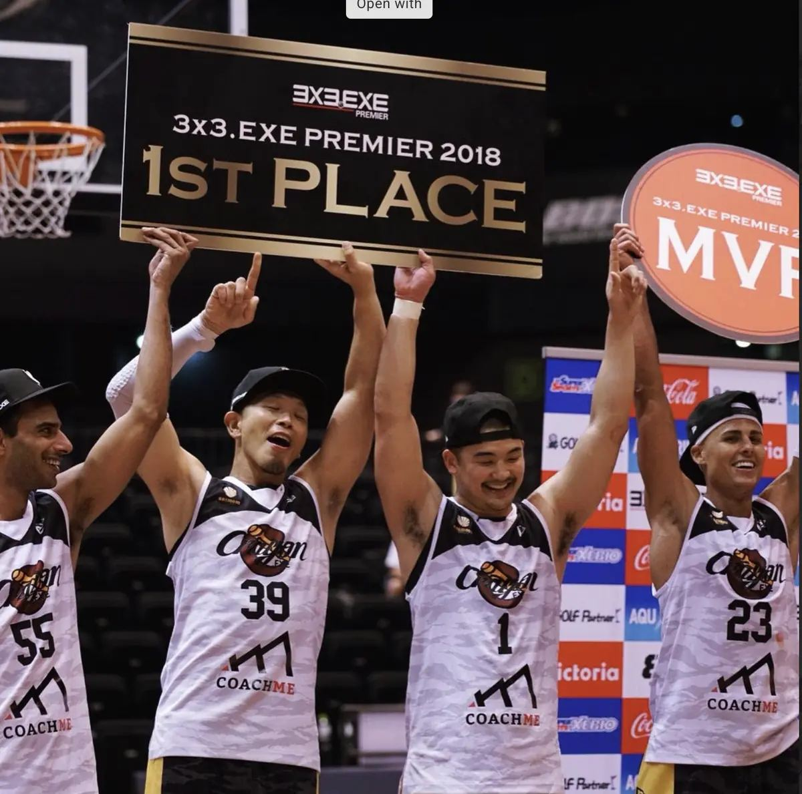
3x3.EXE Premier 2018 — 1st Place
Crayon.EXE Championship Victory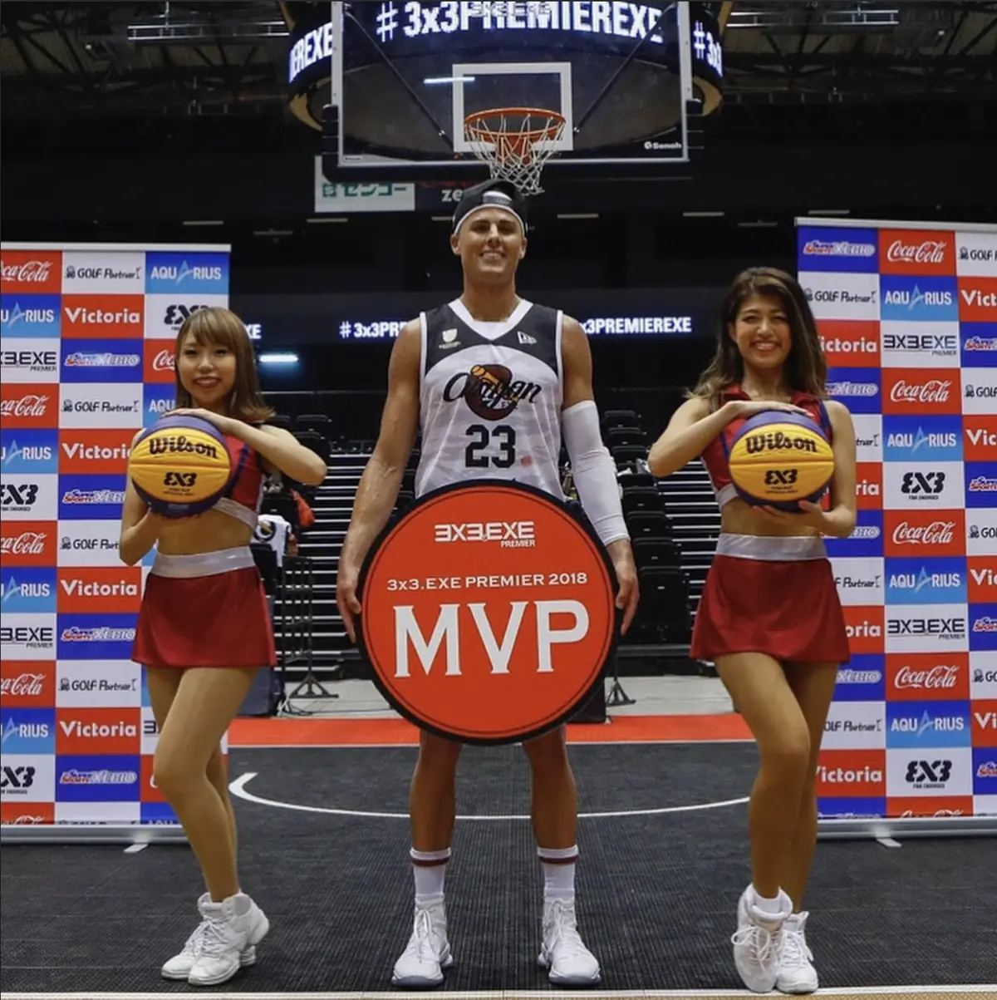
3x3.EXE Premier 2018 — MVP
Most Valuable Player AwardFrom the Chris Paul Basketball Academy to the Tokyo American Club, Spencer has spent over a decade pouring his professional experience into the next generation of players. Today, SpenJenn Grind trains 50+ students weekly across private, group, and team programs in Tokyo.
Trained and mentored youth players at WFU's annual summer program while still an active collegiate athlete.
Worked directly within the Chris Paul Academy system, developing national-level youth talent under a world-class coaching framework.
Selected as a camp trainer at UNC — one of the most prestigious basketball programs in college athletics.
Lead skills trainer at Tokyo American Club, developing players across all age groups and skill levels in the heart of Tokyo.
Head coach for both JV and Varsity programs at the British School, building a winning culture and developing student-athletes.
Founder of SpenJenn Grind — Tokyo's premier private basketball training program, now serving 50+ students weekly across all training formats.
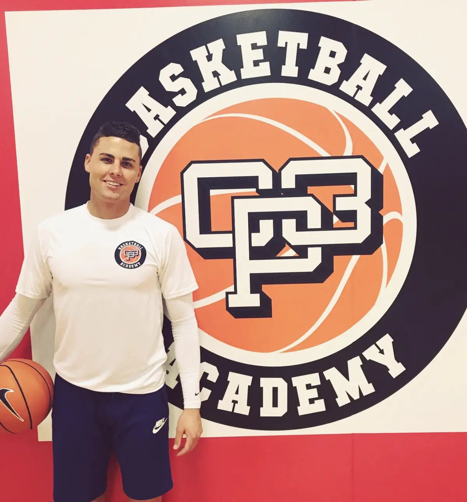
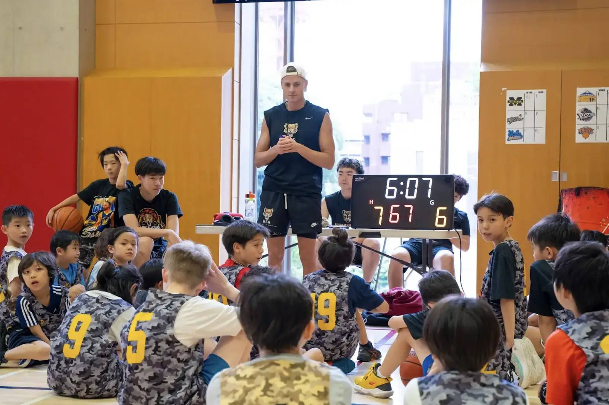
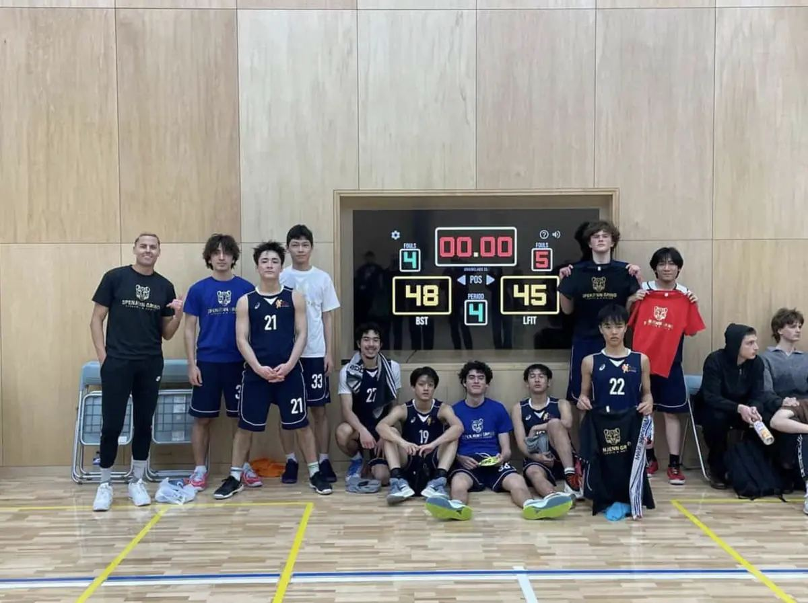
Everything on this page is the foundation behind every session Spencer runs. Be the next chapter.
Book a Session